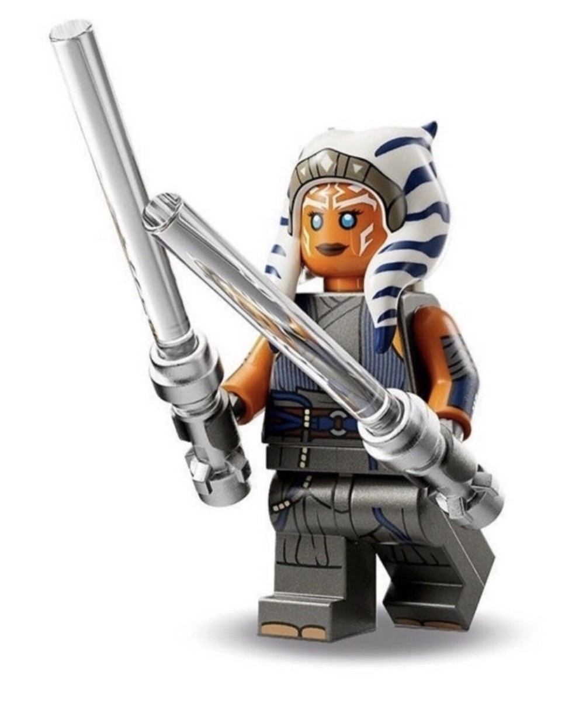

Ahsoka Tano is a Togruta who begins her story as the Jedi Padawan of Anakin Skywalker during the Clone Wars. She trains under Anakin and fights alongside him in many battles against the Separatists. Over time, Ahsoka becomes a skilled fighter and learns how to make difficult decisions on her own. She eventually leaves the Jedi Order and begins following her own path instead of continuing as a Jedi.
Ahsoka has appeared as a LEGO minifigure in several different LEGO Star Wars sets. Her minifigures are easy to recognize because of her orange skin and her white-and-blue head-tails. Different LEGO versions of Ahsoka represent how her appearance changes throughout the Star Wars timeline. She is also usually shown with lightsabers, including the two white lightsabers that she uses later in her life.
After leaving the Jedi Order, Ahsoka continues helping people and fighting against powerful enemies throughout the galaxy. She later becomes involved in the early fight against the Galactic Empire and helps members of the growing rebellion. Ahsoka also learns that her former Jedi Master, Anakin Skywalker, became Darth Vader after falling to the dark side. Her story connects several different parts of Star Wars, including the Clone Wars, the Empire, and events that happen after it.